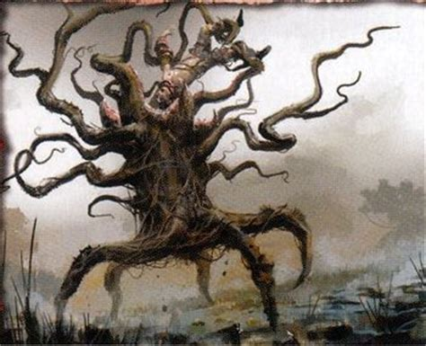

In 1874, a letter written by a German traveler named Carl Leche was published worldwide, because in the letter Leche described a most unusual plant: a man-eating tree! According to Leche's letter, he was traveling in Madagascar ― an island off the east coast of Africa ― with a man named Hendrick who was friends with a tribe of cave-dwelling pygmies called the Mkodos. The Mkodos lived in a very isolated valley, and Hendrick had brought Leche there with the promise of showing him some very unusual plant-life. After traveling deep into a swampy forest in the valley, the explorers and the pygmies came to a clearing... it was here that the vile trees grew, surrounded by the bones of their victims. The first tree Leche encountered he described as having an eight foot tall trunk that was shaped like a pineapple and brown in color. From the top grew eight leaves, each about twelve feet in length and attached to the top of the plant, which laid stiffly upon the ground; the sides of these leaves that faced up were covered with thorny hooks. A bowl-shaped cavity on top of the tree was filled with a strange liquid, and hairy green tendrils stuck out stiffly eight feet in all directions from the base of the bowl. Finally, six tall, whitish tentacles grew from the base of the bowl, and waved around in the air of their own accord like snakes.
At this point, however, Leche’s observation of the tree was interrupted by the Mkodos, who forced a young woman at spear point to climb the tree and drink some of the fluid from its bowl; this put the woman instantly into a stupor, as if drugged. The waving tentacles wrapped around her, and then the green, hairy tendrils reached up and squeezed the life from her. Lastly, the spiked leaves closed on her body and began to crush... soon, both gore and the tree’s strange sap began to pour down the trunk. The Mkodos began to fill containers with and drink this sap, becoming horribly drunk and rowdy; Leche and Hendrick excused themselves from the scene. Leche kept returning to observe the tree; on the tenth day it had finally re-opened, and a new skull was with the bones at its base. Thus ends Leche’s account of the Man-Eating Tree of Madagascar!
In 1874, a letter written by a German traveler named Carl Leche was published worldwide, because in the letter Leche described a most unusual plant: a man-eating tree! According to Leche's letter, he was traveling in Madagascar ― an island off the east coast of Africa ― with a man named Hendrick who was friends with a tribe of cave-dwelling pygmies called the Mkodos. The Mkodos lived in a very isolated valley, and Hendrick had brought Leche there with the promise of showing him some very unusual plant-life. After traveling deep into a swampy forest in the valley, the explorers and the pygmies came to a clearing... it was here that the vile trees grew, surrounded by the bones of their victims. The first tree Leche encountered he described as having an eight foot tall trunk that was shaped like a pineapple and brown in color. From the top grew eight leaves, each about twelve feet in length and attached to the top of the plant, which laid stiffly upon the ground; the sides of these leaves that faced up were covered with thorny hooks. A bowl-shaped cavity on top of the tree was filled with a strange liquid, and hairy green tendrils stuck out stiffly eight feet in all directions from the base of the bowl. Finally, six tall, whitish tentacles grew from the base of the bowl, and waved around in the air of their own accord like snakes. Sacrifice! At this point, however, Leche’s observation of the tree was interrupted by the Mkodos, who forced a young woman at spear point to climb the tree and drink some of the fluid from its bowl; this put the woman instantly into a stupor, as if drugged. The waving tentacles wrapped around her, and then the green, hairy tendrils reached up and squeezed the life from her. Lastly, the spiked leaves closed on her body and began to crush... soon, both gore and the tree’s strange sap began to pour down the trunk. The Mkodos began to fill containers with and drink this sap, becoming horribly drunk and rowdy; Leche and Hendrick excused themselves from the scene. Leche kept returning to observe the tree; on the tenth day it had finally re-opened, and a new skull was with the bones at its base. Thus ends Leche’s account of the Man-Eating Tree of Madagascar! Leche’s 1874 letter was printed in newspapers and magazines all over the world for decades afterwards as proof of the existence of the deadly tree. In 1924 Chase Salmon Osborn, a former Governor of the state of Michigan in the United States, published a book entitled Madagascar, Land of the Man-Eating Tree. Osborn had explored all across the island of Madagascar to find the killer tree. Everywhere he went, local people knew of the plant and told him stories of it; he even ran across some local missionaries that had come to believe the plant must exist... but no one could actually show him one. Nevertheless, Osborn remained convinced of the tree’s existence. But Osborn likely didn’t know that the earliest account of the deadly tree was published in a notorious newspaper, the New York World. The World was known for publishing sensational stories that were not always true, simply to attract readers... and the story of the man-eating tree is likely one of these untrue stories. Why?
First, there is no evidence that either Carl Leche or the botanist that he supposedly wrote his letter to ever existed. Secondly, no one has ever found a tribe on Madagascar called the Mkodos. Finally, in the hundred plus years since Leche’s letter was published, no one has found any proof a man-eating tree is anywhere on the island of Madagascar... so this is one monster that probably never existed.